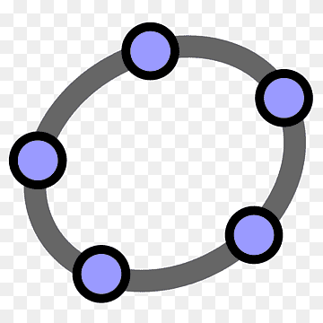
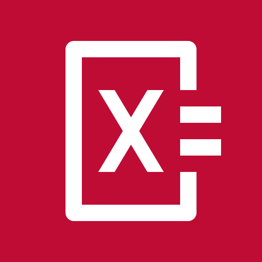
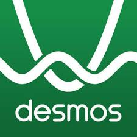
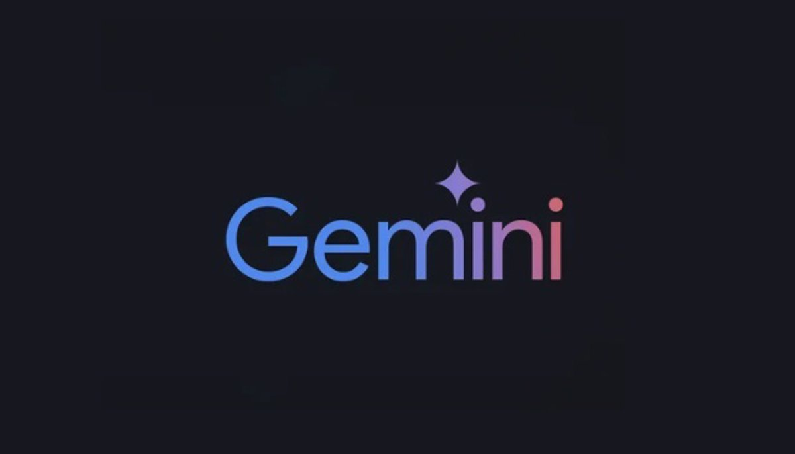

Herramientas Matemáticas Digitales

GeoGebra
Herramienta interactiva para geometría, álgebra y cálculo que permite visualizar conceptos matemáticos de forma dinámica.
Mathway
Resuelve problemas matemáticos paso a paso, desde aritmética básica hasta cálculo avanzado.

Photomath
Utiliza la cámara de tu dispositivo para resolver problemas matemáticos de forma instantánea.
Khan Academy
Plataforma gratuita para aprender matemáticas y otras disciplinas con videos y ejercicios interactivos.

Desmos
Poderosa calculadora gráfica en línea para visualizar funciones y explorar conceptos matemáticos.
Symbolab
Herramienta avanzada para resolver ecuaciones complejas con explicaciones paso a paso detalladas.

ChatGPT
Asistente de IA para resolver dudas y aprender matemáticas de forma interactiva y personalizada.

Claude
IA avanzada especializada en ayuda matemática y resolución de problemas complejos con explicaciones claras.

Gemini
Inteligencia artificial de Google para asistencia matemática avanzada y análisis de problemas complejos.